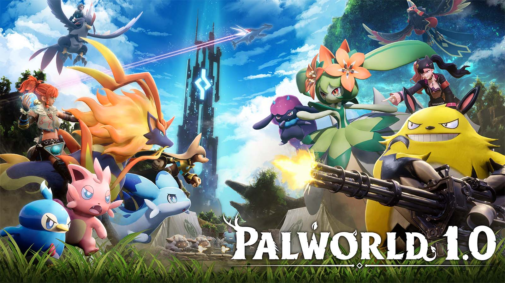

Pal World is an open-world game that combines features from games like ARK: Survival Evolved and Pokémon. The game starts with your character waking up on a beach with a bunch of pals watching you sleep. As you play and progress, you catch cool new pals and make better armor, weapons, and tools to make beating boss towers, protecting yourself, and life on the island easier in general. The ultimate goal is to get through all 8 bosses and collect their boss items, so you can later on beat the final boss who is threatening the islands you live on with your pals.
I played it with my friend, and we caught many pals and set up automation at our bases for the materials we needed for crafting items in the game. I personally really loved this game. The visuals on all the different islands and the different ways you could use the pals made the game a lot more interesting too. Certain pals had certain work suitabilities, and they would help at the base. It was nothing like any other game I’ve tried, and I would recommend this game to anyone who likes to adventure and a little challenge.